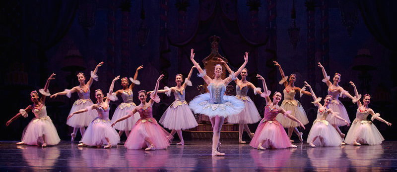
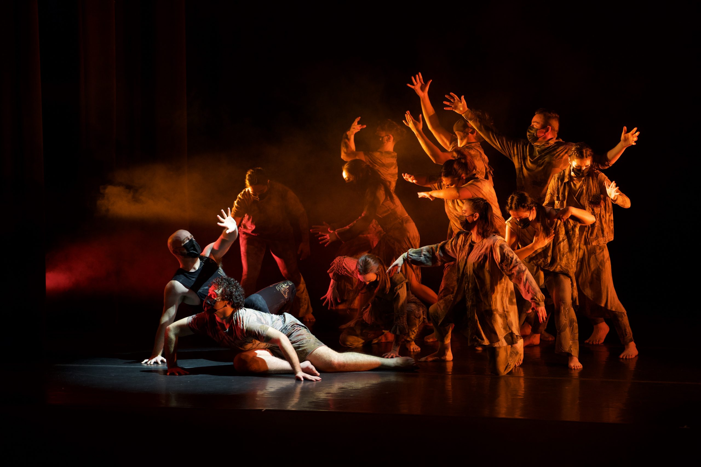
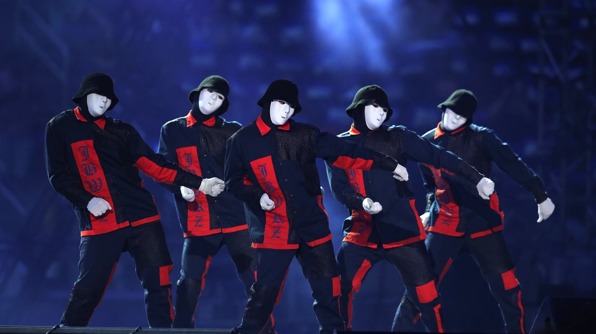

Dance has been a part of human culture since the very earliest communities and civilisations, with recorded evidence of dancing being found dating back to 30,000 years ago.
Since then, different dances have changed, merged and evolved into what we know today as the most well-known dance genres.
Ballet dance developed during the Italian Renaissance, before evolving in France and Russia into a concert dance meant for public performance. This is in the form of a ballet, in which the dance is choreographed with classical music. Ballet productions vary between using elaborate costumes and staging and using minimal costuming and bare staging.
Ballet is now a widespread, highly technical form of dance with many subgenres including classic, romantic, neoclassical and contemporary.
More info Ballroom dance is a type of partner dance originating at the end of the sixteenth century in France. Commonly used as shorthand for any partner dance, ballroom has today evolved into two main subgenres – standard/smooth and Latin/rhythm. Dances within these categories include the waltz, tango and foxtrot, and pasodoble, bolero and samba.
Ballroom is a popular form of competitive dance, or dancesport, with competitions being held all over the world.
More infoDeveloped during the mid-twentieth century, contemporary dance is now one of the most popular and technical forms of dance studied and performed professionally, especially in the US and Europe. Drawing on classical, modern and jazz dance styles, contemporary dance has evolved to incorporate many characteristics of a broader range of dance forms.
Known for its emphasis on strong torso and legwork, contract and release, fall and recovery and floor work, it is often known for unpredictable and disordered changes in speed and rhythm throughout a performance.
More info Hip-hop dancing refers to a range of street dances that developed in relation to hip hop music and culture. Hip-hop dancing dates back to the early 1970s in New York and California, evolving out of Funk and the development of break beat. Main styles of hip-hop dancing include Breaking, Locking and Popping, with derivative styles emerging out of these including Memphis Jookin’, Turfing, Jerkin’ and Krumping. These were often popularised and made mainstream after being featured in music videos of the time.
Today, hip-hop is performed in outdoor spaces, in dance studios and competitively.
 More info